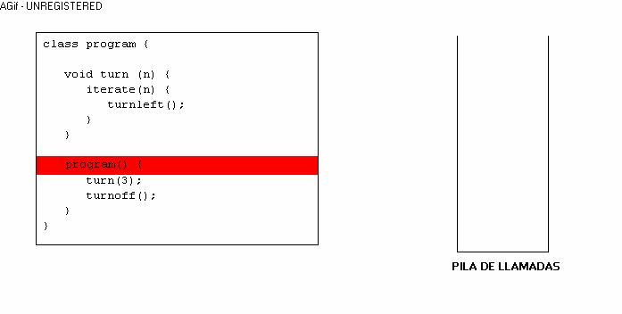
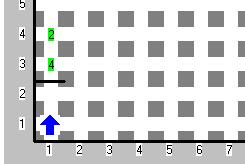

Hemos llegado al último tema, y no por eso el menos importante, de hecho, es el tema más complicado que veremos aqui, y es muy útil no solo para Karel, sino para resolver cualquier problema. Debido a la complejidad del tema, se han creado 5 subtemas:
Empecemos. ¿Te has preguntado alguna vez qué sucede cuándo llamas a una instrucción que tu creaste? Como te habrás dado cuenta, se ejecuta la instrucción que le pediste y luego continua en el lugar en donde se quedó. Pero en realidad, ¿cómo hace eso la computadora? Pues bien, la computadora tiene una cosa que se llama "pila de llamadas", cuando un programa se ejecuta y encuentra una instrucción, se guarda en la pila en que lugar se quedó, entonces ejecuta la instrcción que le pediste y al terminar la instrucción, revisa en la pila en donde estaba anteriormente, para continuar en ese lugar. ¿Muy enredado? Mira este dibujo:

Espero haya quedado claro, ya que esto es el punto crucial de la recursividad. Ahora que sabemos como funciona el llamado a procedimientos o instrucciones. Definamos lo que es recursividad.
Una instrucción recursiva, es aquella que en algún momento, se llama así misma. Por ejemplo, puedes revisar en libros y en muchos otros lados, la definición recursiva del factorial:
factorial(1) = 1
factorial(n) = n * factorial(n - 1)
Como puedes ver, para saber el factorial de un número, necesitas saber el factorial del número anterior. Allí está la recursividad.
Toda instrucción recursiva, consta de dos partes:
Ahora que sabes que es recursividad, intenta hacer la definición recursiva de la serie de Fibonacci, la cual dice que sus primeros dos elementos (1 y 2) son 1, y para cualquier otro número de Fibonacci, se debe sumar el Fibonacci de los dos números anteriores, Por ejemplo: Fibonacci(3) = 2, Fibonacci(5) = 5.
Pasemos de lleno a la recursividad en Karel.
Intentemos ahora llamar a una instrucción desde sí misma, recordemos que debe de tener una base y una definición recursiva, ¿te parece bien que la base sea si el frente esta bloqueado termina?, ¿y te parece bien que si no avance una casilla y entonces se llame asi misma?, ¡Hagámoslo!
...
void recursiva () {
if (frontIsClear) {
move();
recursiva();
}
}
...
Nota que en Karel es imposible decirle que termine la instruccion, así que mejor invertimos la condición y avanzamos si el frente está libre, ¡es otra forma de poner la base!, por que, en otras palabras, la base es lo que hace que la recursión termine y no sea infinita. Nota también que en este caso las operaciones que hacemos son solamente "move();". Algo diferente al factorial ¿no?
¿Qué crees que haga esté código? Ponlo en el Simulador Karel y adivina...
¡Así es! Karel avanzará mientras el frente este libre. Entonces te preguntarás ¿no sería mejor un ciclo mientras? Y la respuesta es: si solamente quieres hacer eso, sí, sin embargo, ¿que tal si quieres contar con zumbadores cuantos pasos avanzaste? ¡A verdad! Si queremos hacer eso, debemos agregarle una línea a nuestro código:
...
void recursiva () {
if (frontIsClear) {
move();
recursiva();
putbeeper();
}
}
...
Ahora pruébalo.
¡Wow! ¡Sorprendente! ¿Por qué funciona?
Si recuerdas la sección de fundamentos, cada vez que se llama una instrucción, la siguiente instrucción se guarda en la pila de llamadas, como se va a llamar exactamente el número de veces que avanzaste, cuando la recursividad termine al llegar a la base, va a sacar una por una las instrucciones que siguen, y las que siguen siempre serán "putbeeper();". En este ejemplo, solo hay una instrucción antes y después de las llamadas recursivas, pero puede haber muchísimas más.
Si aún no lo entiendes, trata de simular la pila de llamadas de la misma forma que está en la imagen.
Ejercicio 12: ¿Recuerdas el problema del periódico del Ejercicio 2? Ahora imagina que el periódico está en la posición 1,1 y que la casa de Karel, puede estar ubicada en cualquier posición del mundo, eso sí, con la misma orientación y forma. Haz un programa que haga que Karel lleve el periódico a su sala. ¡Usa recursividad! Recuerda, piensa en que momento la recursividad termina (BASE) y si hay que hacer algo en ese momento, luego piensa en la llamada recursiva, y las operaciones que van a ir antes, y las que van a ir después (las que se van a guardar en la pila).
¿Recuerdas los parámetros? ¿Recuerdas las funciones pred() y succ()? ¿Que pasaría si a una instrucción con parámtro la llamaramos usando pred() o succ()?
Todo esto, en Karel es posible, definamos una instrucción con parámetros y volvámosla recursiva usando succ():
...
void recursiva2 (n) {
if (frontIsClear) {
move();
recursiva2 ( succ (n) );
}
else {
iterate(n) {
putbeeper();
}
}
}
...
Este código hace exactamente lo mismo que el de la sección anterior, con la diferencia de que la complejidad que existía en la pila de llamadas es eliminada, y colocada como una instrucción base. En cada paso de la recursión, se aumenta uno, y cuando llegas a la base, tiene un número que tal vez pudas usar para tu beneficio. No te olvides que también puedes usar la función pred() y iszero() y que en la llamada recursiva puedes llamarla con el parámetro sin modficar.
Como punto importante, hay que destacar que en la pila de llamdas, además de la instrucción que sigue, también se guarda el valor actual del parámetro.
Ejercicio 13: Realiza el Ejercicio 12 pero con Recursividad con parámetros.
Ejercicio 14: Realiza una instrucción que avance a Karel tantas veces como zumbadores tenga en su mochila utilizando Recursividad con parámetros, NO se vale usar un ciclo mientras.
Si ya dominas los dos tipos de recursividad anteriores, esto será muy fácil para ti, ya que la recursividad mixta no es más que usar los dos tipos de recursividad al mismo tiempo.
Veamos el siguiente problema:

Teniendo un mundo como el de arriba y con zumbadores infinitos en la mochila, coloca en 1,1 el resultado de la multiplicación.
Este es uno de los problemas más clásicos de recursividad mixta, sin ella la complejidad del problema sería muy elevada.
Para este problema usaremos dos instrucciones, uno con recursividad simple y el otro con parámetro.
La mecánica de solución es la siguiente: Se van a tomar todos los zumbadores de una posición con recursividad con parámetros, para que al llegar a la base, el parámetro tenga el número de zumbadores que hay en dicha posición, posteriormente, ese número se pasa como parámetro a la instrucción recursiva simple (si, aunque la recursividad es simple, también tiene parámetro), y en cada paso, se le va a llamar recursivamente con el mismo parámetro, de esa forma, en la pila de llamadas, el parámetro va a estar tantas veces como zumbadores haya en la segunda posición, y vuala. Tal vez quede más claro si ves las instrucciones y las sigues paso a paso en Karel.
...
void multiplica (n) {
if (nextToABeeper) {
pickbeeper();
multiplica(n);
iterate (n) {
putbeeper();
}
}
else {
veAlInicio();
}
}
void cuenta (n) {
if (nextToABeeper) {
pickbeeper();
cuenta( sucede (n) );
}
else {
move();
multiplica (n);
}
}
...
Esta casi completa, pero le falta implementar la instrucción veAlInicio (que debe ser de lo más trivial) y el posicionamiento inicial, tal vez en un principio no entiendas bien, revisa el código paso a paso hasta que lo comprendas, ¡Suerte!
Ejercicio 15: Teniendo un mundo como el de abajo:
en donde puede haber cualquier cantidad de calles y cualquier ancho en las avenidas (siempre cerrado el circuito y sin "islas" o bifurcaciones),deje en la esquina izquierda más inferior (2,1 en el ejemplo), tantos zumbadores como número de calles de ancho 1 que hay, Karel lleva infinitos zumbadores en su mochila. En resultado del ejemplo es 3.
En este problema se usan casi todos los temas vistos en el curso, emplealos y resuélvelo.
Hemos llegado al fin del curso, ahora debes ser capaz de participar en la Olimpiada Mexicana de Informatica, no olvides seguir resolviendo problemas para mejorar siempre tus habilidades, puedes encontrar ligas a las páginas en donde hay problemas en la página principal de la OMI.
¡SUERTE!